생산자동화산업기사 (2017-08-26 기출문제)
1과목: 기계가공법 및 안전관리
1. 기어 절삭법이 아닌 것은?
- 배럴에 의한 법(barrel system)
- 형판의 의한 법(templet system)
- 창성에 의한 법(generated tool system)
- 총형 공구에 의한 법(fomed tool system)
(정답률: 69%)

2. 높은 정밀도를 요구하는 가공물, 각종 지그 등에 사용되며 온도 변화에 영향을 받지 않도록 항온항습실에 설치하여 사용하는 보링 머신은?
- 지그 보링 머신(Jig boring maching)
- 정밀 보링 머신(fune boring maching)
- 코어 보링 머신(core boring maching)
- 수직 보링 머신(vertica boring maching)
(정답률: 73%)
3. 드릴을 가공할 때 가공물과 접촉에 의한 마찰을 줄이기 위하여 절삭날 면에 주는 각은?
- 선단각
- 웨브각
- 날 여유각
- .홈 나선각
(정답률: 76%)
4. 연삭깊이를 깊게 하고 이송속도를 느리게 함으로써 재료제거율을 대폭적으로 높인 연삭방법은?
- 경면(mirror) 연삭
- 자기(megnetic)연삭
- 고속(high speed)연삭
- 크립 피드(creep fees)연삭
(정답률: 84%)
5. 밀링머신의 테이블 위에 설치하여 제품의 바깥부분을 원형이나 윤곽가공할 수 있도록 사용되는 부속장치는?
- 더브테일
- 회전 테이블
- 슬로팅 장치
- 래크 절삭 장치
(정답률: 77%)
6. TiC 입자를 Ni 혹은 Ni과 Mo를 결합체로 소결한 것으로 구성인선이 거의 발생하지 않아 공구수명이 긴 절삭공구 재료는?
- 서멧
- 고속도강
- 초경합금
- 합금 공구강
(정답률: 62%)
7. 밀링머신 테이블의 이송속도 720mm/min, 커터의 날수 6개, 커터회전수가 600rpm일 때, 1날 당 이송량은 몇 mm인가?
- 0.1
- 0.2
- 3.6
- 7.2
(정답률: 70%)
8. 수직 밀링머신의 주요 구조가 아닌 것은?
- 니
- 칼럼
- 방진구
- 테이블
(정답률: 70%)
9. 가연성 액체(알코올, 석유, 등유류)의 화재등급은?
- A급
- B급
- C급
- D급
(정답률: 77%)
10. 선반의 가로 이송대에 4mm 리드로 100등분 눈금의 핸들이 달려 있을 때 지름 38mm의 환봉을 지름 32mm로 절삭하려면 핸들의 눈금은 몇 눈금을 돌리면 되겠는가?
- 35
- 70
- 75
- 90
(정답률: 66%)
11. 연삭가공에서 내면연삭에 대한 설명으로 틀린 것은?
- 외경 연삭에 비하여 숫돌의 마모가 많다.
- 외경 연삭보다 숫돌 축의 회전수가 느려야 한다.
- 연삭숫돌의 지름은 가공물의 지름보다 작아야 한다.
- 숫돌 축은 지름이 작기 때문에 가공물의 정밀도가 다소 떨어진다.
(정답률: 48%)
12. 동일직경 3개의 핀을 이용하여 수나사 유효지름을 측정하는 방법은?
- 광학법
- 삼침법
- 지름법
- 반지름법
(정답률: 89%)
13. 호닝작업의 특징으로 틀린 것은?
- 정확한 치수가공을 할 수 있다.
- 표면정밀도를 향상시킬 수 있다.
- 호닝에 의하여 구멍의 위치를 자유롭게 변경하여 가공이 가능하다.
- 전 가공에서 나타난 테이퍼, 진원도 등에 발생한 오차를 수정한다.
(정답률: 73%)
14. 표면거칠기의 측정법으로 틀린 것은?
- NPL식 측정
- 촉침식 측정
- 광 절단식 측정
- 현미 간섭식 측정
(정답률: 58%)
15. 지름 75mm의 탄소강을 절삭속도 150m/min으로 가공하고자 한다. 가공 길이 300mm, 이송은 0.2mm/rev로 할 때 1회 가공 시 가공시간은 약 얼마인가?
- 2.4분
- 4.4분
- 6.4븐
- 8.4분
(정답률: 55%)
16. 비교 측정방법에 해당되는 것은?
- 사인 바에 의한 각도 측정
- 버니어캘리퍼스에 의한 길이 측정
- 롤러와 게이지 블록에 의한 테이퍼 측정
- 공기 마이크로미터를 이용한 제품의 치수 측정
(정답률: 50%)
17. 선반의 주축을 중공축으로 할 때의 특징으로 틀린 것은?
- 굽힘과 비틀림 응력에 강하다.
- 마찰열을 쉽게 발산시켜 준다.
- 길이가 긴 가공물 고정이 편리하다.
- 중량이 감소되어 베어링에 작용하는 하중을 줄여준다.
(정답률: 54%)
18. 측정자의 미소한 움직임을 광학적으로 확대하여 측정하는 장치는?
- 옵티미터(optimeter)
- 미니미터(minimeter)
- 공기 마이크로미터(air micrometer)
- 전기 마이크로미터(electrial micrometer)
(정답률: 75%)
19. 합금공구강에 대한 설명으로 틀린 것은? (문제 오류로 실제 시험에서는 모두 정답처리 되었습니다. 여기서는 1번을 누르면 정답 처리 됩니다.)
- 탄소공구강에 비해 절삭성이 우수하다.
- 저속 절삭용, 총령 절삭용으로 사용된다.
- 탄소공구강에 Ni, Co 등의 원소를 첨가한 강이다.
- 경화능을 개선하기 위해 탄소공구강에 소량의 합금원소를 첨가한 강이다.
(정답률: 80%)
20. 주축(spindle)의 정지를 수행하는 NC-code는?
- M02
- M03
- M04
- M⑤
(정답률: 49%)
2과목: 기계제도 및 기초공학
21. 그림과 같이 밀도가 7.7g/cm2인 연강제 축의 질량은 약 몇 g인가?
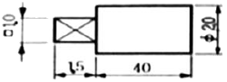
- 144
- 108
- 72
- 36
(정답률: 62%)
22. 도면에서 두 종류 이상의 선이 같은 장소에서 겹치게 될 경우 표시되는 선의 우선순위가 높은 것부터 낮은 순서대로 나열되어 있는 것은?
- 외형선, 숨은선, 절단선, 중심선
- 외형선, 절단선, 숨은선, 중심선
- 외형선, 중심선, 숨은선, 절단선
- 절단선, 중심선, 숨은선, 외형선
(정답률: 77%)
23. 다음 용접 기본 기호 중 플러그 용접 기호는?
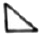
(정답률: 66%)
24. 그림과 같은 분할 핀의 도시 중 분할 핀의 호칭길이는?
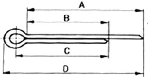
- A
- B
- C
- D
(정답률: 65%)
25. 호칭 번호가 6212 C2 P5인 구름 베어링에 조립되는 축의 지름은 몇 mm인가?
- 6
- 12
- 60
- 62
(정답률: 67%)
26. 그림과 같이 물체의 구멍이나 홈 등 일부분의 특정 부분만 그려서 나타낸 것은?
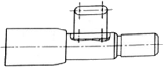
- 보조 투상도
- 부분 투상도
- 회전 투상도
- 국부 투상도
(정답률: 60%)
27. 그림과 같은 물체를 제3각법으로 투상하여 정면도, 평면도, 우측면도를 나타냈을 때 가장 적합한 것은?
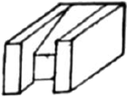
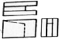
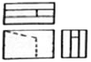
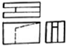
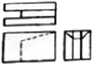
(정답률: 67%)
28. 가공 형상의 줄무늬 방향기호가 잘못 표시된 것은?
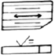
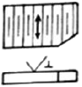
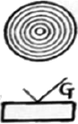
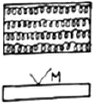
(정답률: 81%)
29. 위치수 허용차와 아래치수 허용차와의 차이를 무엇이라고 하는가?
- 실 치수
- 기준 치수
- 치수 공차
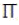
치수
(정답률: 89%)
30. 구멍과 축의 끼워 맞춤에서 G7/h6은 무엇을 뜻하는가?
- 구멍 기준식 억지 끼워맞춤
- 구멍 기준식 헐거운 끼워맞춤
- 축 기준식 억지 끼워맞춤
- 축 기준식 헐거운 끼워맞춤
(정답률: 52%)
31. 같은 크기의 저항 n개에 직렬로 연결한 회로의 전압 V를 인가하였을 때, 한 저항에 나타나는 전압은?
- n+V
- n-V
- V/n
- 1/nV
(정답률: 80%)
32. 교류 전기의 설명으로 틀린 것은?
- 교류전압의 주파수는 일정하다.
- 시간의 변화에 따라 전압의 변화가 있다.
- 시간의 변화에 따라 전류의 방향이 일정하다.
- 시간의 변화에 따라 전압은 정현파 곡선을 그린다.
(정답률: 54%)
33. 응력에 대한 설명으로 틀린 것은?
- N/m2은 응력의 단위이다.
- 전단응력은 수직응력의 일종이다.
- 응력의 크기는 힘/면적으로 표현된다.
- 응력 크기뿐만 아니라 작용면과 작용 방향을 갖는다.
(정답률: 62%)
34. 회전기의 전력이 일정할 때, 토크(torque)에 대한 설명으로 틀린 것은?
- 회전기에서 토크는 회전력을 말한다.
- 회전기의 토크는 회전속도에 비례한다.
- 회전관성이 큰 회전기의 기동 시 큰 토크가 필요하다.
- 속도와 토크의 특성은 모터의 용도 선정에 매우 중요한 요소이다.
(정답률: 54%)
35. 물체의 운동속도가 시간이 흘러도 변함이 없는 운동은?
- 난류 운동
- 등속 운동
- 각 변속 운동
- 각 가속도 운동
(정답률: 86%)
36. 다음 삼각형의 면적은?
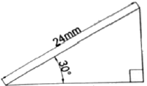
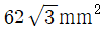
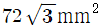
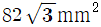
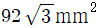
(정답률: 69%)
37. 속도가 2m/s인 입구의 지름이 30mm인 구멍으로 흘러들어가 지름 10mm인 구멍으로 흘러나올 때 물의 속도는 몇 m/s인가?
- 0
- 10
- 18
- 30
(정답률: 65%)
38. 스패너의 길이를 3배로 하면 토크는 몇 배가 되는가?
- 1/9
- 1/3
- 3
- 9
(정답률: 70%)
39. 저항 값이 R[Ω]인 전구에 전압이 V[V]인 전지를 연결하였을 때, 이 직류회로에 흐르는 전류 I[A]는?
- VR
- RV2
- V/R
- B2/V
(정답률: 82%)
40. 중공축이 비틀림 모멘트(T)를 받을 때 축의 지름(d)을 구하는 식으로 옳은 것은? (단, 허용전단응력은 τα이다.)
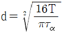
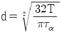
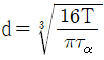
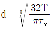
(정답률: 60%)
3과목: 자동제어
41. 제어동작에 다른 분류 중 다음 설명에 해당되는 제어동작은?
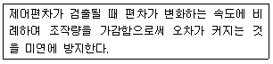
- 미분제어동작
- 비례제어동작
- 적분제어동작
- 비례적분제어동작
(정답률: 53%)
42. PLC 프로그램에서 다음 설명에 해당하는 것은?
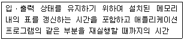
- 스캔타임
- 실행시간
- 응답시간
- 워치독 타임
(정답률: 68%)
43. 다음 제어계 요소 중 1차 지연 요소는?
- K
- Ks
- K/s
- K/1+Ts
(정답률: 69%)
44. 다음 중 점근 안정한 시스템은?
- 특성방정식이 s2+2s-3=0인 시스템
- 특성방정식이 s2-4s+3=0인 시스템
- 전달함수가
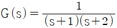
로 주어진 시스템 - 전달함수가
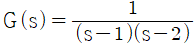
로 주어진 시스템
(정답률: 68%)
45. 다음 PLC 프로그래밍 방식 중 회로도 방식에 속하지 않는 것은?
- 레더도 방식
- 명령어 방식
- 논리기호 방식
- 플로차트 방식
(정답률: 55%)
46. PC기반제어에서 'imechatronics.h' 파일이 컴퓨터의 다음 폴더에 있을 경우 참조선언방법으로 옳은 것은?
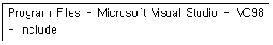
- #inlude"imechatronics.h"
- #inlude(imechatronics.h)
- #inlude[imechatronics.h]
- #inlude＜imechatronics.h＞
(정답률: 74%)
47. 제어계의 시간영역 동작에서 백분율(%)최대 오버슈트의 의미로 옳은 것은?
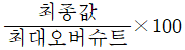
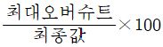
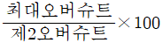
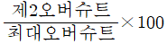
(정답률: 68%)
48. 목표값 400℃의 전기로에서 열전온도계의 지시에 따라 전압조정기로 전압을 조절하여 온도를 일정하게 유지시키고 있다. 이 때 온도는 어느 것에 해당되는가?
- 검출부
- 제어량
- 조작량
- 주작부
(정답률: 69%)
49. 직류 서보기구에 대한 특징으로 틀린 것은?
- 구조가 복잡하다.
- 기동 토크가 크다.
- 보수가 용이하고 내환경성이 좋다.
- 속도제어 범위가 넓고 제어성이 좋다.
(정답률: 43%)
50. 다음 중 공기압 서비스 유닛(압축공기 조정 유닛)의 기능으로 적합하지 않은 것은?
- 진공을 발생시킨다.
- 압축공기 속에 포함된 이물질을 제거한다.
- 압축공기 속에 윤활유를 섞어서 공급한다.
- 공압 제어밸브와 실린더에 공급되는 압축공기의 압력을 조절한다.
(정답률: 62%)
51. 제어량 종류(성질)에 따른 분류가 아닌 것은?
- 공정제어
- 서보기구
- 자동조절
- 장치제어
(정답률: 45%)
52. 선형제어시스템에서 r(t)=100sin500t를 시스템에 입력으로 하였더니 y(t)=50sin(500t-60°)의 출력이 발생하였다. 이 시스템의 입력대비 출력의 진폭비와 위상차는?
- 진폭비 : 0.5, 위상차 : 30°
- 진폭비 : 0.5, 위상차 : 60°
- 진폭비 : 2.0, 위상차 : 30°
- 진폭비 : 2.0, 위상차 : 60°
(정답률: 64%)
53. 기계적 변위를 제어량으로 하는 서보기구와 관계없는 것은?
- 자동 조타 장치
- 자동 위치 제어기
- 자동 평형 기록계
- 자동 전원 조정장치
(정답률: 73%)
54. PLC(Programmable Logic Controller)의 주요 구성요소로만 짝지어진 것은?
- CPU, 기억장치, 하드웨어, 통신 네트워크
- CPU, 기억장치, 입ㆍ출력장치, bus 커넥터
- CPU, Power Supply, 기억장치, 입ㆍ출력장치
- CPU, Power Supply, 하드웨어, 입ㆍ출력장치
(정답률: 62%)
55. 1차 지연요소
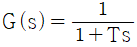
인 제어계의 절점 주파수에서의 이득[dB]으로 옳은 것은?- -3
- -4
- -5
- -6
(정답률: 49%)
56. 다음 중 유압의 일반적인 특징이 아닌 것은?
- 소형장치로 큰 힘(출력)을 발생시킬 수 있다.
- 전기ㆍ전자의 조합으로 자동제어가 가능하다.
- 과부하에 대한 안전장치가 간단하고 정확하다.
- 유온의 영향을 받지 않아 정확한 속도와 제어가 가능하다.
(정답률: 71%)
57. 다음 중 개루프(open loop)제어계의 응용으로 볼 수 없는 것은?
- 교통 신호 장치
- 스테핑 모터 시스템
- 물류공장의 컨베이어
- NC 선반의 위치제어
(정답률: 70%)
58. 8비트의 출력 포트 중 하위비트에서 두 번째, 세 번째, 다섯 번째 비트만 ON시키고 나머지는 OFF 시키려고 하는 프로그램을 작성하려고 할 때 출력해야 할 16진수 값은?
- 0×04
- 0×08
- 0×16
- 0×32
(정답률: 62%)
59. 공기압 발생장치에서 보내온 공기 중에는 먼지 및 이물질 등이 포함되어 있다. 이러한 것을 막아 공압기기를 보호하기 위해 설치하는 것은?
- 압축공기 필터
- 압축공기 조절기
- 압축공기 증폭기
- 압축공기 드라이어
(정답률: 85%)
60. 1200rpm으로 회전하는 모터에 분해능이 5000ppr(pulse per round)인 로터리 엔코더의 출력 주파수[kHz]는?
- 10
- 100
- 1000
- 2000
(정답률: 53%)
4과목: 메카트로닉스
61. 2진 사디리형(binary ladder) D/A 변환기가 이용하고 있는 원리는?
- 가산기
- 미분기
- 승산기
- 적분기
(정답률: 54%)
62. 마이크로프로세서의 내부구조에 속하지 않는 것은?
- 연산부
- 제어부
- 클럭부
- 레지스터부
(정답률: 70%)
63. 다음 중 뚫은 구멍의 내면을 매끄럽게 하는 리머 작업 시 공구의 떨림을 방지하기 위한 작업으로 가장 적절한 방법은?
- 자루를 길게 한다.
- 이송속도를 빠르게 한다.
- 날 간격을 같지 않게 한다.
- 절삭속도를 되도록 빨리 한다.
(정답률: 63%)
64. 수나사를 만들 때 사용되는 공구는?
- 탭
- 드릴
- 다이스
- 엔드밀
(정답률: 71%)
65. 서보시스템에서 제어 기준값과 실제값의 차이를 무엇이라고 하는가?
- 외란
- 레퍼런스
- 상태변수
- 제어편차
(정답률: 84%)
66. 프로그램을 구성하는 명령어인 머신 사이클에 해당하지 않는 과정은?
- 인출(fetch)
- 실행(execution)
- 디코딩(decoding)
- 인코딩((incoding)
(정답률: 49%)
67. 다음 현상의 명칭으로 옳은 것은?
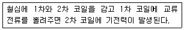
- 공진현상
- 옴의 법칙
- 전자기 유도
- 키르히호프의 법칙
(정답률: 80%)
68. 다음 논리회로의 출력 X는?
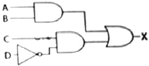
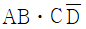
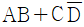
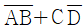
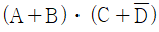
(정답률: 75%)
69. 서브루틴으로부터 원래의 프로그램으로 돌아갈 때 사용하는 명령은?
- RET
- RLD
- RRA
- LOOP
(정답률: 73%)
70. 절대형(absolute tupe) 로터리 인코더의 설명으로 틀린 것은?
- 잡음에 강하고 읽는 오차가 누적되지 않는다.
- 회전방향 변경에 대한 방향 판별 회로가 필요하다.
- 임의의 점을 영점으로 하기 위해서는 연산이 필요하다.
- 전원이 끊겨도 정보가 없어지지 않으며 제복귀가 가능하다.
(정답률: 46%)
71. 100W의 백열전등에 120V의 전압이 가해질 때 백열전등에 흐르는 전류는 약 몇 A인가?
- 0.83
- 1.2
- 8.33
- 12
(정답률: 61%)
72. 회전형 스테핑 모터의 종류가 아닌 것은?
- VR형
- PM형
- 인버터형
- 하이브리드형
(정답률: 55%)
73. 광센서를 사용할 때 고려사항이 아닌 것은?
- 신뢰성
- 동작속도
- 제조방식
- 출력레벨
(정답률: 81%)
74. 다음 중 고유 저항이 가장 작은 재료는?
- 금
- 은
- 구리
- 알루미늄
(정답률: 62%)
75. 다음 회로에서 저항 R2[Ω]의 전압 강하 V2[V]는 몇 볼트[V]인가?
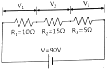
- 20
- 30
- 45
- 60
(정답률: 76%)
76. 스테핑 모터의 특성과 거리가 먼 것은?
- 분해능이 한정된다.
- 가감속 특성이 좋다.
- 관성이 큰 부하에 적합하다.
- 다른 디지털 기기와의 인터페이스가 용이하다.
(정답률: 64%)
77. (101101.11)2를 10진수로 변환한 것은?
- 40.55
- 40.75
- 45.55
- 45.75
(정답률: 68%)
78. 트랜지스터에 대한 설명으로 틀린 것은?
- PNP형 타입이 있다.
- NPN형 타입이 있다.
- NPN형은 베이스에 +5VDC 공급 시 컬렉터와 이미터가 도통된다.
- PNP형은 이미터에 GDN(-)공급 시 컬렉터와 베이스가 도통된다.
(정답률: 62%)
79. 다음 그림은 밀링작업에서 상향절삭방식이다. 하향절삭과 비교한 설명으로 옳은 것은?
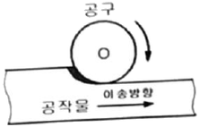
- 공구수명이 길다.
- 표면 거칠기가 나쁘다.
- 공작물 고정이 유리하다.
- 백래시를 제거해야 한다.
(정답률: 72%)
80. 이상적인 연산증폭기의 특성으로 틀린 것은?
- 입력저항=0
- 출력저항=0
- 대역폭=무한대
- 전압이득=무한대
(정답률: 60%)